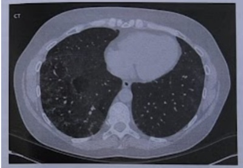
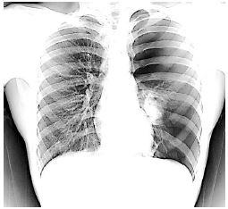
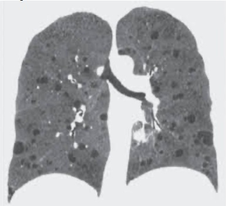
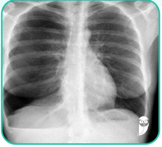
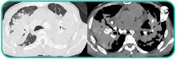
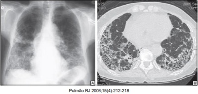
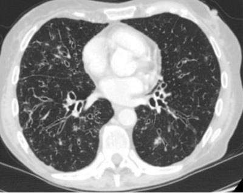
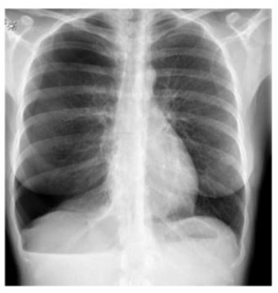
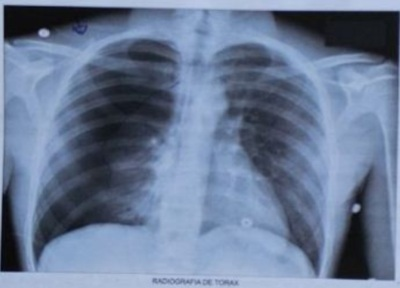
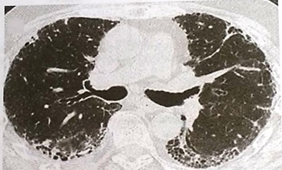

Questão 1 · Pneumonite de Hipersensibilidade PH · 4000187463Mulher de 25 anos de idade, previamente hígida, comparece ao ambulatório por dispneia aos moderados esforços, iniciada há dois anos. Ela refere episódios recorrentes de febre, mialgia, sibilos e piora da dispneia basal, que ocorrem sempre que ela volta de viagem da fazenda de seus pais. Nega tabagismo ou exposição a outras drogas. Ao exame físico, está eupneica e com estertores nos em bases bilateralmente. Apresentou tomogra a de tórax sem contraste (imagem a seguir), realizada há três semanas, durante um dos episódios de piora respiratória. Qual é o diagnóstico?

A Asma não controlada
B Pneumonite de hipersensibilidade
C Histoplasmose pulmonar
D Fibrose pulmonar idiopática
Questão 2 · Pneumologia · Pneumonite de Hipersensibilidade PH · 4000184110Homem de 50 anos, portador de melanoma metastático para pulmão, fígado e linfonodos, procura atendimento por quadro de 1 semana de dispneia progressiva e tosse; sem febre. Relata estar em uso de imunoterapia com anticorpo monoclonal anti-PDL-1 há cerca de 3 meses, tendo feito a última aplicação há 2 semanas. Ao exame clínico, o paciente apresenta-se taquidispneico, com frequência cardíaca 117 bpm, pressão arterial 110x60 mmHg, frequência respiratória de 32 irpm, saturação de oxigênio em ar ambiente de 85%. Tomografia computadorizada de tórax apresentada. Além da oferta de oxigênio suplementar, qual é a conduta para o caso?

A Internação em unidade de terapia intensiva; pesquisa de vírus respiratórios; corticoterapia em alta dose; antibioticoterapia.
B Internação em enfermaria; avaliação da oncologia para radioterapia; antibioticoterapia.
C Internação em unidade de terapia intensiva; avaliação da oncologia para radioterapia; corticoterapia em baixa dose.
D Internação em enfermaria; pesquisa de vírus respiratórios; corticoterapia em baixa dose e antibioticoterapia.
Questão 3 · Pneumopatias Intersticiais Hipertensão Pulmonar Bronquiectasias e Pneumotórax Espontâneo · 4000183187Homem, 18 anos de idade, previamente hígido, chega ao PS com queixa de falta de ar iniciada há 1 hora. Exame físico: Escala de Coma de Glasgow = 14, pupilas isocóricas fotorreagentes, FR = 30 irpm, SpO₂ = 70%, ausculta respiratória abolida em hemitórax direito, PA= 80/40 mmHg, FC = 133 bpm, tempo de enchimento capilar = 4 segundos, ausculta cardíaca sem alterações. Qual é o achado esperado na ultrassonografia à beira leito?
A Sinal do código de barras em hemitórax direito.
B Sobrecarga de câmaras direitas.
C Linhas B em todo hemitórax direito.
D Líquido no espaço pericárdico.
Questão 4 · Pneumotórax espontâneo · Cirurgia Torácica · Cirurgia · 4000183105Homem, 28 anos de idade, previamente hígido, foi submetido a drenagem pleural no 5º espaço intercostal por pneumotórax espontâneo. No momento imediato após a drenagem pleural já apresentava escape aéreo pelo dreno. No 8º dia de internação hospitalar ainda mantinha fístula aérea. Em relação aos dados apresentados na história clínica, Como isso se mostra no frasco de drenagem e qual é a melhor conduta?
A Oscilação ampla da coluna de líquido do sêlo d’a
B Borbulhamento do líquido no frasco do dreno; cirurgia.
C Borbulhamento do líquido no frasco de drenagem; realizar a pleurose.com talco.
D Oscilação intermitente da coluna de líquido; cirurgia.
Questão 5 · Pneumotórax espontâneo · Pneumotórax Simples · 4000182536Homem de 38 anos, obeso mórbido, dá entrada no Pronto-Socorro por descompensação diabética, e após avaliação inicial, recebe indicação de internação para hidratação por via intravenosa por desidratação moderada e tratamento clínico adequado. Após as condutas iniciais tomadas na sala de emergência, apresenta dispneia intensa súbita e o médico solicita o rX demonstrado a seguir. Em face do exposto, assinale a alternativa correta.

A Trata-se de pneumotórax à direita devido a complicações de acesso venoso central.
B Além do acesso venoso central em subclávia direita, também apresenta tubo orotraqueal.
C Há presença de condensação pulmonar em área peri-hilar à direita.
D Paciente apresenta calcificação do botão aórtico com provável aneurisma.
E O índice cardiotorácico do paciente é 0,7, o que indica normalidade da área cardíaca.
Questão 6 · Cirurgia · Fatores de Risco · 4000181539Paciente masculino, 28 anos, dá entrada no pronto socorro apresentando raio X de tórax realizado na UPA com pneumotórax a direita. Relata queixa de dor torácica e dispneia. Nega história de trauma. No exame físico mostra-se estável hemodinamicamente, com FR 28 mpm e saturação O2 88%. Na ausculta torácica apresenta diminuição do murmúrio no hemitórax direito, com finos sibilos. Em relação a este caso clínico, assinale a assertiva correta.
A A bulectomia com pleurodese é indicada somente após recorrência do quadro.
B A tomografia computadorizada de tórax deve ser realizada antes de se definir o tratamento.
C A toracocentese é o tratamento definitivo mais empregado no tratamento do pneumotórax espontâneo.
D O pneumotórax espontâneo primário é mais comumente visto em mulheres jovens (20-30 anos) e no hemitórax esquerdo.
E A doença mais comumente associada ao pneumotórax espontâneo secundário é a doença pulmonar obstrutiva crônica.
Questão 7 · Doenças relacionadas ao asbesto Asbestose · Asbestose · Pneumologia · 4000181099Um paciente de 71 anos de idade, procurou a unidade de saúde da família com queixa de cansaço aos esforços, presente há vários meses, mas com piora nas últimas semanas. Nega tabagismo, etilismo ou uso de medicações. Refere estar aposentado há cinco anos, tendo trabalhado por 20 anos em uma fábrica de telhas de brocimento (telhas de cimento e bras de amianto). Ao exame, apresenta estertores crepitantes em bases pulmonares e baqueteamento digital. Solicitado radiogra a de tórax que revela pequenas opacidades irregulares em campos médios e inferiores de ambos os pulmões. Com base nesse caso, qual o diagnóstico mais provável?
A Asma ocupacional.
B Asbestose.
C Sarcoidose.
D Silicose.
E Pneumonia por SARS-COV2.
Questão 8 · Sarcoidose · Sarcoidose · Pneumologia · 4000170046Mulher de 37 anos apresenta dispneia progressiva, tosse seca, calafrios, febre baixa diária há 6 meses, evoluiu c o m desorientação, fraqueza muscular e apatia. Exame físico: PA 100/60 mmHg, FC 105 bpm, SatO₂ 94%, desidratada 3+/4+; hiperemia, aumento de temperatura e dor em 2ª e 3ª articulações interfalangianas proximais da mão direita; lesões hiperpigmentadas nos membros (imagem 1). Exames laboratoriais: escarro negativo para BAAR; sorologias para HIV, histoplasmose, paracoccidioidomicose e apergilose negativas; hemograma normal, PCR 7 mg/dL, Na 135 mEq/L, K 4.5 mEq/L, Cr 2.0 mg/dL, Ur 102 mg/dL, cálcio corrigido 11.8 mg/dL, 1,25 (OH)2 vitD3 = 200 pg/mL. Radiogra a de tórax (imagem 2). A principal hipótese diagnóstica, mecanismo fisiopatológico e manejo inicial são, respectivamente,

A neoplasia pulmonar; hipercalcemia relacionada com secreção ectópica de PTH; pamidronato 60 – 90 mg IV e furosemida IV.
B neoplasia pulmonar; hipercalcemia por produção de proteína PTH-like; hidratação IV vigorosa.
C sarcoidose; hipercalcemia por aumento da expressão de 1
D sarcoidose; hipercalcemia por secreção ectópica de PTH pelos granulomas; hidratação vigorosa, pamidronato 60 – 90 mg IV e furosemida IV.
Questão 9 · Pneumologia · 4000164767Um paciente de 72 anos, sexo masculino, ex tabagista, apresenta queixa de dispneia ha 5 anos, associado a tosse seca. Nega sibilância. Ao exame físico, apresentava baqueteamento digital em mãos e pés. Realizou exame tomográ co, com evidência de cistos de faveolamento empilhadas, que predominavam nos terços inferiores e em região subpleural, além de bronquiectasias de tração. Realizou prova de função pulmonar (abaixo). De acordo com o quadro clínico exposto, o diagnóstico mais provável é:
A DPOC
B Combinação fibrose com enfisema pulmonar
C Pneumonite por hipersensibilidade
D Fibrose pulmonar idiopática
Revisar: possível letra faltando em enunciado
Questão 10 · Doenças relacionadas ao asbesto Asbestose · Asbestose · Pneumologia · 4000164373O mesotelioma pleural está, normalmente, associado a
A Silicose.
B Tuberculose.
C Asbestose.
D Sarcoidose.
Questão 11 · Distúrbio ventilatório restritivo · Pneumonia Intersticial Não Específ ica PINE · Pneumologia · 4000164047Mulher de 55 anos, com história prévia de doença pulmonar quando mais jovem, vem apresentando, há alguns meses, episódios de tosse seca, associados a períodos de dispneia aos esforços. Existe história de tabagismo com consumo de 35 maços/ano e etilismo social. O exame físico mostra obesidade, IMC = 34kg/m², taquipneia, murmúrio vesicular diminuído principalmente em bases, crepitações e alguns sibilos. A prova de função respiratória mostra capacidade vital forçada (CVF) = 2,00 (normal: 3,31), volume expiratório no primeiro segundo (VEF1s) = 1,70 (normal: 2,86) e, após o uso de broncodilatador, CVF = 2,10 e VEF1s = 1,74. Em relação ao caso apresentado, a melhor definição do tipo de distúrbio ventilatório e de uma doença a ele relacionada, respectivamente, são:
A restritivo reversível / sarcoidose
B obstrutivo reversível / asma brônquica
C obstrutivo não reversível / enfisema pulmonar
D restritivo não reversível / pneumonia intersticial não específica
Questão 12 · Pneumopatias Intersticiais Hipertensão Pulmonar Bronquiectasias e Pneumotórax Espontâneo · 4000163428O pneumotórax espontâneo secundário é assim classificado quando as lesões evidenciadas na radiogra a de tórax ou na tomogra a computadorizada podem ser identi cadas como responsáveis pela sua ocorrência. A condição clínica mais frequentemente relacionada a essa complicação é:
A neoplasia maligna primária.
B metástase pulmonar secundária.
C fibrose pulmonar.
D doença pulmonar intersticial.
E doença pulmonar obstrutiva crônica.
Questão 13 · Tratamento Cirúrgico · 4000145882Um homem de vinte anos de idade deu entrada no pronto-socorro, com pneumotórax espontâneo de grande volume à direita. Foi indicada uma drenagem pleural. Com base nesse caso hipotético, assinale a alternativa correta.
A A causa mais provável é a ruptura espontânea do esôfago.
B O dreno deve ser inserido na região torácica mais caudal possível, em torno do 10.o espaço intercostal, para facilitar a drenagem de sangue, eventualmente presente na cavidade.
C Durante a realização do procedimento, deve-se evitar a exploração digital da cavidade pleural, devido ao risco de lesão pulmonar ou de órgãos mediastinais.
D A aspiração contínua com pressão negativa de 15 a 20 cmH2O é de fundamental importância para a reexpansão pulmonar e deverá ser instalada o mais cedo possível.
E Para que o dreno possa ser retirado, o pulmão deverá estar adequadamente expandido e não deverá haver borbulhamento no frasco coletor durante a tosse.
Questão 14 · Cintilograf ia ventilaçãoperf usão · Fluxograma de investigação · 4000145472Mulher de 41 anos queixa-se de dispneia ao andar menos de 2 quarteirões no plano e ao varrer a casa, há 5 meses. Teve tromboembolismo pulmonar no puerpério há 6 meses e está em uso de apixabana desde então. Desconhece outras comorbidades e nega o uso de outros medicamentos. Ao exame, PA 120/76mmHg, FR 1 Sipm, SpO2 93% (em ar ambiente). O exame respiratório é normal. O ictus cordis é palpado no 4° EIC na linha hemiclavicular (LHC) esquerda, possui extensão e duração normais. Palpa-se movimento na região paraesternal esquerda inferior. A segunda bulha apresenta desdobramento contínuo, mais amplo à inspiração, audível ao longo da borda paraesternal esquerda e no ápice, com hiperfonese do segundo componente. Ausculta-se sopro sistólico inicial, que abafa a primeira bulha, suave, na borda paraesternal esquerda, com acentuação inspiratória. Considerando a causa MAIS provável, a propedêutica MAIS BEM INDICADA para a pesquisa da etiologia neste caso é:
A Cateterismo do coração direito
B Cintilografia de ventilação e perfusão pulmonar
C Espirometria com prova broncodilatadora
D Tomografia computadorizada do tórax
Questão 15 · Sarcoidose · Sarcoidose · 4000143560A relação de linfócitos TCD4/TCD8 além da aids é utilizada em que doença?
A Leucemia mieloide crônica.
B Doença mista do tecido conjuntivo.
C Doença de Gaucher.
D Sarcoidose.
E Espondilite anquilosante.
Questão 16 · Pneumoconioses · Pneumoconioses · 4000137547Homem, 63 anos, trabalhou com jateamento de areia no porto até a aposentadoria aos 60 anos. Radiogra a (RX) do tórax de rotina: pequenas opacidades nodulares em lobos superiores e calcificações em hilo direito. Considerando se a principal hipótese diagnóstica, pode afirmar -se que.
A mesotelioma é complicação frequente desta doença.
B a forma aguda da doença pode ser grave e progressiva.
C esses pacientes tem maior risco de infecção por
D esse paciente não tem maior risco de desenvolver tuberculose pulmonar.
Questão 17 · Pneumotórax espontâneo · Radiograf ia de Tórax · História Clínica · 4000137415Homem, 25 anos, com síndrome de Marfan foi admitido na emergência com dor torácica esquerda e dispneia. Pode-se afirmar que o RX simples de tórax é compatível com o diagnóstico de:

A pneumotórax.
B pneumomediastino.
C consolidação na base pulmonar esquerda.
D enfisema de partes moles.
Questão 18 · Pneumologia · 4000131419Paciente do sexo feminino, 28 anos, refere há cerca de dois anos dispneia progressiva até moderados esforços e tosse seca esporádica. Nega tabagismo. Nega patologias prévias. Nega uso de medicações contínuas. Trouxe resultados de exames já realizados, conforme apresentados a seguir. Dosagem VEGF-D: maior que 800pg/ml FAN NÃO REAGENTE. Espirometria: distúrbio ventilatório restritivo leve, sem variação significativa ao broncodilatador. Tomografia de abdômen: angiolipoma renal direito Tomografia de tórax: Qual é o diagnóstico dessa paciente?

A Linfangiomiomatose pulmonar.
B Síndrome de Birt-Hogg-Dubé.
C Pneumonia intersticial linfocítica.
D Histiocitose pulmonar de células de Langerhans.
Questão 19 · Def iciência de Alf a1antitripsina · Pneumopatias intersticiais associadas a colagenoses · 4000129901Sistema Respiratório Paciente de 48 anos de idade procura seu consultório para investigação de tosse e expectoração crônicas. Nega tabagismo ou comorbidades. Nega uso de medicamentos. Ao exame apresenta FR=18 mrm, Sat O2=96% em ar ambiente e ausculta com estertores discretos em bases pulmonares. Traz radiogra a de tórax que demonstra sinal do “trilho de trem” bilateralmente. Considerando o caso apresentado, analise as assertivas: I. A doença pode estar associada a doenças inflamatórias como a artrite reumatóide, síndrome de Sjögren e doença inflamatória intestinal. II. Deve-se considerar causas genéticas, como a deficiência de alfa-1 antitripsina. III. A presença de envolvimento difuso deve levantar a suspeita de aspiração de corpo estranho. IV. A distribuição da doença nos campos pulmonares inferiores é mais comum na fibrose cística. Estão corretas as assertivas
A I e II apenas.
B I e III apenas.
C II e III apenas.
D II e IV apenas.
E III e IV apenas.
Questão 20 · Pneumologia · Bronquiectasias · 4000129740Identifique abaixo as afirmativas verdadeiras ( V ) e as falsas ( F ) em relação às bronquiectasias. ( ) O diagnóstico é realizado pela Tomografia Computadorizada de Alta Resolução. ( ) Na prova de função pulmonar (espirometria) habitualmente encontramos redução significativa da Capacidade Vital Forçada (CVF). ( ) A Difusão de CO (DLCO) encontra-se diminuída na quase totalidade dos casos e constitui marcador de gravidade da doença. ( ) É recomendada a realização de cultura de escarro para bactérias potencialmente pato- gênicas no monitoramento. ( ) O acompanhamento da perda da função pulmonar deve ser realizado com método de imagem (Tomogra a Computadorizada de Alta Resolução) que evidencia a progressão da doença. ( ) Em se tratando de doença estrutural, habitualmente sequela de processos infecciosos prévios, não se identi ca evolução da doença após estabelecido o diagnóstico, sendo por- tanto desnecessário acompanhamento funcional destes pacientes. Assinale a alternativa que indica a sequência correta, de cima para baixo.
A V • V • F • F • F • F
B V • F • V • V • V • F
C V • F • F • V • F • F
D F • V • V • V • F • V
E F • F • F • V • V • F
Revisar: possível letra faltando em enunciado
Questão 21 · Doenças relacionadas ao asbesto Asbestose · Asbestose · Pneumologia · 4000129469Paciente de 52 anos foi encaminhado ao Ambulatório para investigação de doença pulmonar ocupacional. Relatou apresentar dispneia aos grandes esforços e tosse seca há 6 meses. Negou outros sintomas sistêmicos ou respiratórios. O exame físico foi normal. A radiogra a de tórax mostrou opacidades reticulares periféricas sem faveolamento nos lobos pulmonares inferiores e placas pleurais calcificadas. Qual a hipótese diagnóstica mais provável?
A Silicose
B Asbestose
C Beriliose
D Pulmão do minerador de carvão
Questão 22 · Pneumotórax espontâneo · Medicina Preventiva · Pneumologia · 4000137305Você atende uma paciente de 25 anos, no quarto pós-operatório de colecistectomia videolaparoscópica, usuária de anticoncepcional oral, com queixa de dispneia associada à dor torácica ventilatório-dependente. Realizou uma radiogra a de tórax em outro serviço (imagem abaixo), foi de alta e retorna para seu atendimento. Qual é sua conduta quanto ao diagnóstico da paciente?

A A paciente é de alta probabilidade pré-teste pelos critérios de Wells, por isso deve ser submetida imediatamente a uma angiotomografia de tórax.
B O diagnóstico da doença da paciente é clínico-radiográfico.
C A paciente é de baixa probabilidade pré-teste pelos critérios de Wells, por isso deve ser solicitado o d-dímero.
D Antes mesmo de prosseguir investigação, devemos administrar 30 ml/kg de SF 0,9% e a primeira dose de antibiótico de amplo espectro.
E A paciente deve ser submetida à inalação com beta-2-agonista, imediatamente.
Questão 23 · Medicina Preventiva · Silicose · Pneumoconiose devida à Poeira de Sílica Silicose · 4000137302A tomografia de tórax a seguir está relacionada a que tipo de exposição ocupacional?

A Fabricação de telhas e tubulações.
B Jateamento de areia.
C Indústria de algodão.
D Confecção de silos para compostagem.
E Afiação de ferramentas.
Questão 24 · Tratamento · História Clínica · Cirurgia · 4000112124Homem, 18 anos, procura atendimento médico por dor pleurítica súbita à direita e dispneia aos moderados/grandes esforços. Não há antecedentes pessoais de comorbidades e não é tabagista. Ao exame físico, saturação 92% em ar ambiente, afebril, FC = 90 bpm e PA = 118 x 82 mmHg. Hipertimpanismo à percursão e ausência de murmúrio vesicular à direita. Uma radiografia de tórax é solicitada (figura). Qual o diagnóstico e conduta adequados?

A Colapso pulmonar completo por pneumotórax extenso e com quadro descrito há o diagnóstico de pneumotórax hipertensivo. Indicação de toracocentese descompressiva seguida de drenagem pleural.
B Pneumotórax completo à direita indica drenagem pleural tubular, seguida de investigação com tomografia de tórax.
C Atelectasia completa do pulmão direito levando a pneumotórax extenso, inicialmente indicaria broncofibroscopia para excluir causa endobrônquica.
D Pneumotórax importante, porém, em paciente sem insuficiência respiratória, indicaria drenagem pleural aberta e investigação com ressonância magnética.
Questão 25 · Pneumopatia Intersticial Usual PIU Fibrose Pulmonar Idiopática FPI · 4000110054Mulher de 69 anos de idade, natural e procedente de São Paulo é dentista. Tabagista de 20 maços-ano, apresenta dispneia e tosse seca há 2 anos, sem outras queixas. No exame clínico apresenta saturação de oxigênio de 90% em ar ambiente e estertores em velcro bilaterais, sendo o restante do exame clínico normal. A radiogra a e tomogra a de tórax estão a seguir. A espirometria mostra VEF1 e CVF diminuídos com relação VEF1/CVF preservada. Qual é a principal hipótese diagnóstica?

A Fibrose intersticial pulmonar idiopática.
B Doença pulmonar obstrutiva crônica.
C Pneumoconíose.
D Tuberculose pulmonar.
Questão 26 · Bronquiectasias · 4000075238Homem, 25 anos, com tosse produtiva crônica há cinco anos, infecção pulmonar de repetição, internado quatro vezes nesse período, apresenta exacerbação do quadro com piora da quantidade e da coloração (agora esverdeada) do escarro. TC de tórax é mostrada a seguir. A antibioticoterapia empírica inicial deve contemplar os seguintes agentes etiológicos, comumente isolados:

A Pneumocystis jiroveci e Candida sp
B Haemophilus influenzae e Pneumocystis jiroveci
C Haemophilus influenzae e Pseudomonas aeruginosa
D Pseudomonas aeruginosa e Candida sp
Questão 27 · Diagnóstico dif erencial · Achados clínicos · Manif estações clínicas · 4000061974Uma mulher de 57 anos apresenta tosse oligoprodutiva, com escarro claro, dispneia progressiva e perda de 6kg em 2 meses. Nega doenças atuais ou prévias conhecidas. É tabagista há 30 anos. O exame físico não revela anormalidades. Exames de laboratório: Hg: 11,2g/dL; LG: 7.540/mm³; plq: 219.000/mm³; Ca: 13,3mg/dL; albumina: 4,0g/dL; cr: 1,3mg/dL. Radiogra a do tórax: Biópsia de linfonodo mediastinal: granulomas epitelioides sem necrose, contendo células gigantes tipo Langhans. Não foram identi cados agentes infecciosos nas diversas colorações (Ziehl-Neelsen, PAS, metenamina de prata de Grocott). Considerando o caso descrito, assinale a alternativa que apresenta o diagnóstico MAIS PROVÁVEL para esse paciente.

A Adenocarcinoma pulmonar.
B Paracoccidioidomicose.
C Sarcoidose.
D Tuberculose.
Questão 28 · Silicose · Pneumoconiose devida à Poeira de Sílica Silicose · Pneumologia · 4000053932Paciente de 58 anos de idade, com história de dispneia com 2 anos de evolução e piora progressiva procura seu consultório para avaliação. Nega tabagismo, nega etilismo, nega comorbidades ou uso de medicamentos. Trabalha com jateamento de areia. Ao exame apresenta FR=20, Sat O2 em ar ambiente de 90%, MV com redução difusa. Traz RX de tórax com nódulos pouco definidos e de tamanho variável, predominando em lobos superiores. Considerando o diagnóstico mais provável, avalie as asserções a seguir e a relação causal proposta entre elas. I – O paciente tem risco aumentado de contrair infecções por Mycobacterium tuberculosis, micobacterioses atípicas e fungos. PORQUE; II – O agente ao qual o paciente foi exposto é citotóxico para os macrófagos pulmonares, que são defesas primárias.
A As asserções I e II são proposições verdadeiras, e a segunda é uma justificativa daprimeira.
B As asserções I e II são proposições verdadeiras, mas a segunda não é uma justificativada primeira.
C A asserção I é uma proposição verdadeira e a asserção II é uma proposição falsa.
D A asserção I é uma proposição falsa e a asserção II é uma proposição verdadeira.
E As asserções I e II são proposições falsas.
Questão 29 · Pneumopatia Intersticial Usual PIU Fibrose Pulmonar Idiopática FPI · 4000046961Paciente N.S.R. feminino, 50 anos, foi atendido e relatou inchaço das pernas e falta de ar com evolução de 5 meses. Encontra-se afebril, com estertores difusos à ausculta em base pulmonar. Frequência cardíaca de 80 bpm, regular, com divisão ampliada de S2. O RX de tórax mostra aumento da borda direita do coração com sinais de derrames pleurais bilaterais. A troponina sérica é I <0,4 ng/mL. O diagnóstico que mais se adequa ao quadro clínico acima é:
A Fibrose pulmonar intersticial
B Miocardite viral
C Cardiopatia alcoólica
D Pericardite constritiva
E Valva bicúspide
Questão 30 · Asbestose · 4000033851Homem de 67 anos é encaminhado da UBS ao pneumologista do Centro de Especialidades Médicas devido a queixas de dor no hemitórax direito, dispneia, tosse e emagrecimento. Informa que, devido à fadiga, interrompeu a realização diária de caminhada. Relata ser hipertenso em uso regular de losartana (50mg/2xdia). Na história pregressa, relata ter trabalhado como pedreiro na construção civil por 15 anos e, posteriormente, como trabalhador em indústria de brocimento, na produção de caixas d'água e telhas onduladas, por 25 anos até aposentar-se há sete anos. Nega tabagismo. A radiogra a de tórax revelou massas lobuladas na parede torácica à direita. O diagnóstico MAIS PROVÁVEL está relacionado à exposição:
A ao asbesto.
B ao benzeno.
C à radiação solar.
D às radiações ionizantes.
Questão 31 · Hemorragia alveolar Vasculites pulmonares · Hemoptise · 4000030805Paciente masculino, 59 anos, dá entrada na emergência com hemorragia alveolar difusa. Assinale o achado esperado no lavado broncoalveolar desse paciente.
A Corpos ferruginosos
B Macrófagos com hemossiderina
C Macrófagos espumosos
D Pneumócitos do tipo II, atípicos
E Linfocitose com razão CD4-CD8 aumentada
Questão 32 · Pneumopatias Intersticiais Idiopáticas · Investigação diagnóstica · Distúrbio ventilatório restritivo · 4000013475Homem de 54 anos se queixa de tosse seca e dispneia ao andar 2 quarteirões no plano. Os sintomas iniciaram há 1 ano, e apresentaram piora lenta e progressiva. Nega outras queixas, doenças prévias, uso de medicamentos, tabagismo ou etilismo. É trabalhador rural e cuida dos animais da fazenda, preparando a ração e limpando os espaços das galinhas e dos cavalos. Faz queimadas na fazenda. Ao exame físico, PA: 120 X 70mmHg, FC 87bpm, FR 23ipm, SpO₂ 91%. A ausculta respiratória revela crepitações nas teleinspiratórias em ambas as bases dos hemitórax. O restante do exame clínico é normal. As dosagens de fator reumatoide, fator antinuclear, anti-Ro, anti-La, anca, anti-HIV, HBsAg e anti-HCV resultaram negativas. Espirometria: VEF1/CVF 0,8, CVF 55%, VEF1 60%. Tomogra a do tórax: espessamento septal intralobular e interlobular, alguns focos de vidro fosco peribroncovascular e nódulos centrolobulares esparsos com predomínio nas porções superiores e médias de ambos os campos pulmonares. Os hilos pulmonares e o mediastino não apresentam anormalidades. Considerando o caso descrito, assinale a alternativa que apresenta a hipótese diagnóstica MAIS PROVÁVEL para esse paciente.
A Doença pulmonar obstrutiva crônica.
B Fibrose pulmonar idiopática.
C Pneumonia de hipersensibilidade.
D Sarcoidose pulmonar.
Questão 33 · Drenagem Pleural Fechada · 4000011125Homem, 65 anos de idade, com história prévia de blebs, apresenta quadro de pneumotórax. Qual é o posicionamento ideal do paciente para a realização da drenagem pleural?
A Em decúbito dorsal horizontal com o membro superior, do lado correspondente à drenagem, em abdução.
B Semi-sentado com o membro superior, do lado correspondente à drenagem, em abdução.
C Em decúbito lateral, com o lado a ser drenado para cima e com o membro superior, do lado correspondente à drenagem, em abdução.
D Em qualquer posição, pois o posicionamento do paciente não influencia no resultado da drenagem pleural.
E Em posição de Trendelenburg, com o membro superior, do lado correspondente à drenagem, em abdução.
Questão 34 · Def inição · Edema Agudo Pulmonar · Radiograf ia de tórax · 4000105261Mulher de 19 anos, admitida na sala de emergência com falta de ar, que se iniciou há algumas horas, relata dor ventilatório dependente e tosse, que se iniciou nos últimos 4 dias. Nega febre, expectoração ou quaisquer outras queixas. Está na 21ª semana de gestação. Nega tabagismo ou comorbidades. Agitação da paciente di culta a realização do exame físico. Sinais vitais: PA = 100 × 60 mmHg, FC = 134 bpm, Sat O₂ de 96% com máscara de O₂ a 100% e taquipneica (34 irpm). Realizada a radiografia abaixo: Sobre o quadro clínico descrito acima, é CORRETO afirmar:

A Os achados clínicos e radiológicos são compatíveis com a Síndrome de Ortner e aangiotomografia é o exame indicado para confirmação diagnóstica.
B As linhas B de Kerley indicam edema agudo pulmonar como etiologia mais provável epreconiza-se o tratamento com diuréticos e ventilação não invasiva.
C Observa-se a Corcova de Hampton que indica TEP como etiologia mais provável epreconiza-se o tratamento com anti-coagulantes em regime de internação.
D Observa-se o sinal de Westermark que indica TEP como etiologia mais provável epreconiza-se o tratamento com trombolíticos, pelo importante comprometimento respiratório.
E O comprometimento do retorno venoso com redução da pré-carga justifica o quadroclínico; o tratamento com ventilação invasiva pode resultar em deterioração do quadro.
Questão 35 · Tuberculose TB · Silicose · Pneumoconiose devida à Poeira de Sílica Silicose · 4000102491Pacientes com silicose, pneumoconiose provocada pela inalação de partículas de sílica cristalina, têm o risco aumentado de desenvolver:
A Asbestose.
B Beriliose.
C Placas pleurais.
D Tuberculose.
Questão 36 · Def inição · História natural · Quadro clínico · 4000090932Considere um paciente masculino, 65 anos, encaminhado à consulta ambulatorial com queixa de dispneia aos esforços progressiva. No último mês procurou atendimento duas vezes em emergências por quadro de dispneia associada à tosse produtiva, sendo medicado com antibióticos. Fora desses momentos de crise nega tosse, expectoração, perda de peso. Relata mais duas visitas à emergência com os mesmos sintomas respiratórios no último ano. Nega outros problemas de saúde, alergias ou história de asma na infância. Não pratica atividade física regular, relata tabagismo 30 maços/ano, sendo que está há uma semana sem fumar. Ao exame físico mostra-se eutró co, sem dispneia de repouso, SpO₂ 92% ar ambiente, ausculta cardíaca e pulmonar sem alterações, sinais vitais dentro da normalidade. Considerando o quadro clínico, é CORRETO afirmar que:
A A história clínica com presença de agudizações exclui a possibilidade de tromboembolismo pulmonar.
B A presença de tabagismo associado a crises de dispneia afasta a possibilidade diagnóstica de doença pulmonar intersticial.
C Linfangioleiomiomatose é uma forte possibilidade diagnóstica, considerando os dados clínicos do paciente.
D A hipótese diagnóstica mais provável é de bronquiectasias, sendo necessário confirmação através de espirometria e RX tórax.
E A hipótese diagnóstica mais provável é DPOC, sendo necessário solicitar espirometria para definição diagnóstica.
Revisar: possível letra faltando em enunciado
Questão 37 · Manejo terapêutico · 4000082024Homem de 47 anos, com sequela de tuberculose pulmonar, mostra raio-x de tórax com bronquiectasias cilíndricas em ambos os lobos superiores, além de algumas áreas de retrações bróticas adjacentes. Analise as assertivas abaixo em relação a esse caso: I. É recomendada vacinação de proteção contra Influenza e Pneumococo. II. A presença, em escarro, de pseudomonas aeruginosa aumenta o risco de exacerbação e piora o prognóstico. III. Em relação à imagem torácica, a tomogra a computadorizada do tórax é o padrão-ouro para o diagnóstico de bronquiectasias. Quais estão corretas?
A Apenas I.
B Apenas II.
C Apenas I e III.
D I, II e III.
Questão 38 · Semiologia · Quadro clínico · Exame Físico · 4000074102Ao exame físico, o diagnóstico diferencial entre derrame pleural e pneumotórax é feito através de:
A Ausculta.
B Percussão.
C Frêmito toracovocal.
D Inspeção.
E Frequência respiratória.
Questão 39 · Tratamento · Radiograf ia de Tórax · Radiograf ia de tórax · 4000066876Homem, 35 anos, com desconforto respiratório há dois dias, com tosse seca, espirros frequentes e rinite. Dá entrada no PS, com dor pleurítica em hemitórax esquerdo. Apresenta febre de 39ºC, saturação de oxigênio de 94%, pressão arterial de 134 x 76 mmHg, pulso de 120 bpm e frequência respiratória de 24 por minuto. Após fazer o exame de Raio X abaixo, você decide:

A Drenar o tórax esquerdo.
B Pedir TC de tórax.
C Pedir broncoscopia com lavado broncoalveolar.
D Antibiótico com claritromicina e rocefin.
Questão 40 · Semiologia · Def inição · Diagnóstico dif erencial de dor torácica na emergência · 4000042954Homem, 36 anos, tabagista (18 maços/ano), queixa-se de dor torácica súbita em hemitórax esquerdo, com piora com a inspiração profunda. Ao exame: dispneico, sudoreico, acianótico, com murmúrio vesicular reduzido em hemitórax à esquerda e com hipertimpanismo à percussão. A principal hipótese diagnóstica é:
A pneumotórax espontâneo.
B infarto agudo do miocárdio.
C atelectasia pulmonar.
D neoplasia pulmonar.
Questão 41 · Pneumopatias Intersticiais Hipertensão Pulmonar Bronquiectasias e Pneumotórax Espontâneo · Cirurgia · 4000036757Jogador de futebol de 24 anos, previamente hígido e sem comorbidades, apresentou durante o jogo dispneia súbita e dor torácica. Foi levado pelo SAMU imediatamente ao PS, apresentando saturação de oxigênio de 80%, sem melhora com máscara de oxigênio. Ao exame físico, apresentava estase jugular, murmúrio vesicular abolido à direita, com timpanismo à percussão do mesmo lado. Taquicárdico e hipotenso. Nesse caso, qual a hipótese diagnóstica e a conduta corretas?
A Tromboembolismo pulmonar - Angiotomografia e fibrinólise.
B Pneumotórax espontâneo - Raios-X de tórax AP e P, e punção no 2º espaço intercostal direito.
C Tromboembolismo pulmonar - Intubação orotraqueal e ventilação mecânica.
D Pneumotórax espontâneo - Punção no 2º espaço intercostal direito.
E Pneumotórax espontâneo - Drenagem torácica no 5º espaço intercostal direito linha axilar média.
Questão 42 · Epidemiologia · Exame Físico · História Clínica · 4000024724Leia o caso clínico a seguir. Paciente do sexo masculino, de 25 anos, composição física de fenótipo longilíneo, hígido até então, embora tabagista, apresenta quadro de dor torácica de início súbito à direita, controlada com analgésicos, tosse e dispneia transitória com melhora, eupneico no momento. Neste caso,
A o quadro clínico é compatível com pneumotórax espontâneo hipertensivo.
B a conduta inicial independe do achado radiológico.
C a etiologia provável está associada à ruptura de blebs pulmonares.
D a tuberculose primária seria um diagnóstico provável.
Questão 43 · Hipertensão Pulmonar · 4000016706Assinale a alternativa que apresenta o achado ao exame clínico que NÃO se deve à hipertensão arteriolar pulmonar idiopática grave.
A Movimento paraesternal esquerdo.
B Baqueteamento digital.
C Desdobramento contínuo e variável da segunda bulha com hiperfonese do componente pulmonar.
D Sopro holossistólico suave, mais audível na inspiração, na borda esternal inferior esquerda.
Questão 44 · Doenças relacionadas ao asbesto Asbestose · Asbestose · 4000011369A doença ocupacional relacionada ao mesotelioma é
A a silicose.
B a beriliose.
C a asbestose.
D o saturnismo.
E o hidrargirismo.
Questão 45 · Outras beriliose siderose e bissinose · 4000011338A bissinose é uma doença ocupacional que ocorre no pulmão de trabalhadores que em sua prática laboral têm um contato intenso com o
A mica.
B talco.
C caolim.
D algodão.
E feldspato.
Questão 46 · Diagnóstico dif erencial · Achados clínicos · Manif estações clínicas · 4000010630Uma paciente de 22 anos de idade, sem antecedentes de tabagismo, evolui há seis semanas, com piora de uma tosse seca e dispneia que não melhoraram após uso de antibioticoterapia e broncodilatadores. Apresenta nível sérico de cálcio de 12,5 mg\dl (VR: 8,0 mg\dl a 11,0 mg\dl), e os raios X de tórax mostram linfadenopatia peri-hilar bilateral. Apresenta eritema nodoso em pernas bilateralmente. Acerca desse caso clínico, assinale a alternativa que apresenta o diagnóstico mais provável dessa paciente.
A Sarcoidose.
B Pneumonia por germes atípicos.
C Embolia pulmonar.
D Lúpus eritematoso sistêmico.
E Carcinoma epidermoide de pulmão.
Questão 47 · Diagnóstico · 4000130141Um médico legista faz necropsia de uma mulher não identi cada que aparenta ter entre 35 e 40 anos e com história clínica desconhecida. Ao exame dos pulmões são evidenciados ateromas nas artérias pulmonares. A doença pré-existente compatível com o achado é:
A Hemossiderose pulmonar idiopática.
B Hipertensão pulmonar.
C Granulomatose de Wegener.
D Síndrome de Goodpasture.
Questão 48 · Def inição · 4000127500Em relação à bronquiectasia, é correto afirmar que:
A A reabilitação pulmonar, importante no tratamento do DPOC, não tem benefício nabronquiectasia.
B O diagnóstico de exacerbação é clínico. Radiografia de tórax deve ser realizada naemergência para diagnóstico diferencial.
C Antibiótico profilático para exacerbação não é indicado dada a crescente preocupaçãocom o advento de resistência bacteriana.
D O tratamento clínico com broncodilatadores e corticoide inalatórios é efetivo emreverter a inflamação das vias aéreas.
E Em geral a etiologia da bronquiectasia é identificada e passível de ser tratada, levandoa reversão da inflamação das vias aéreas através do controle da doença de base.
Questão 49 · Exames de Imagem · Nãof ibrocística · Lavado broncoalveolar LBA · 4000125368Em relação à fibrose pulmonar idiopática (FPI), é correto afirmar que:
A a biópsia pulmonar a céu aberto não é indicada para o estabelecimento do diagnóstico de FPI, mesmo quando a tomografia computadorizada de alta resolução não defina padrão de pneumonia intersticial usual.
B a presença de faveolamento com bronquiectasias de tração difusas à tomografia computadorizada de alta resolução de tórax estabelece padrão radiológico de pneumonia intersticial usual, característica da FPI.
C o achado histopatológico na biópsia pulmonar a céu aberto de áreas extensas de pneumonia em organização, embora não definitivo, fortalece a hipótese de pneumonia intersticial usual.
D o tratamento rotineiro de refluxo gastroesofágico (RGE) não é recomendado em pacientes com FPI, apenas nos casos com investigação diagnóstica comprovada.
E o diagnóstico de FPI é baseado na ausência de causa conhecida de fibrose pulmonar, associada à presença de padrão histológico e/ou radiológico de pneumonia intersticial usual.
Questão 50 · Pneumopatias Intersticiais · Cuidados paliativos em pneumologia · Pneumonite Aspirativa · 4000122932Mulher de 94 anos, internada em casa de repouso há 5 anos, não consegue mais deambular. Após 3º episódio de AVE, alimenta-se e comunica-se com di culdade. Faz uso frequente de óleo mineral, devido à constipação, o que a deixa mais suscetível a desenvolver
A pneumonia lipoídica.
B alteração na lipase pancreática.
C esteatose hepática.
D alteração dos sais biliares.
E disfagia.
Questão 51 · Tratamento · Pneumotórax Simples · Cirurgia · 4000110868Em qual situação o pneumotórax pode ser tratado clinicamente, sem intervenção?
A de tamanho grande, porém pouco sintomático
B de tamanho grande, porém primeiro episódio
C primeiro episódio e pouco sintomático, independente do tamanho
D tamanho pequeno, poucos sintomas e primeiro episódio
E tamanho pequeno, independente dos sintomas ou dos episódios prévios
Questão 52 · Semiologia · Def inição · Epidemiologia · 4000107058Enfermo jovem, 25 anos, tabagista, chega à emergência dispnéico, com história de dor súbita, tipo pleurítica à direita, após reforço. Ao exame físico evidenciou-se murmúrio vesicular e frêmito toracovocal ausentes à direita, com hipersonoridade neste local. O provável diagnostico é:
A Consolidação pulmonar;
B Pneumotórax;
C Derrame pleural;
D Atelectasia;
E Hiperinsuflação pulmonar.
Questão 53 · Tratamento · Radiograf ia de Tórax · Cirurgia · 4000104732Homem, 24 anos, é atendido na Unidade de Emergência de um hospital terciário com queixa de dor súbita em hemitórax direito e dispnéia progressiva durante caminhada há 2 horas. Refere já ter apresentado pneumotórax a esquerda, tendo sido submetido a drenagem pleural, há 2 anos. Ao exame físico: paciente calmo, frequência respiratória de 18 ipm, pressão arterial 130x90 mmHg, frequência cardíaca de 90bpm, hiperssonoridade à percussão do hemitórax direito e ausência de murmúrio vesicular. A figura abaixo mostra a radiografia de tórax da admissão hospitalar. Qual a abordagem mais apropriada para esta afecção?

A Drenagem pleural apenas
B Tratamento cirúrgico
C Tratamento conservador
D Drenagem pleural associada a pleurodese química
Questão 54 · Pneumologia · Síndromes pulmonares eosinof ílicas · 4000083287O diagnóstico de pneumonia eosinofílica aguda é determinado pela presença de radiografia pulmonar com:
A Infiltrado intersticial e hemograma com eosinofilia.
B Foco de consolidação e hemograma com eosinofilia.
C Infiltrado intersticial, hemograma sem eosinofilia e lavado broncoalveolar com eosinofilia.
D Foco de consolidação, hemograma com eosinofilia e biópsia pulmonar inespecífica.
E Bronquiectasias, hemograma sem eosinofilia e exame parasitológico de fezes com estrongiloides.
Questão 55 · Pneumonite de Hipersensibilidade PH · 4000077712Homem, 45 anos, com tosse seca, cansaço progressivo, atualmente aos pequenos esforços, e perda de 8 kg nos últimos dois anos. Nega tabagismo. Exame físico: taquipneico; presença de estertorações bilaterais e baqueteamento digital. TC de tórax de alta resolução: in ltrado intersticial, brose poupando as bases, presença de significativo aprisionamento de ar e nódulos centrolobulares. Lavado broncoalveolar: mais de 50% de linfócitos. Biópsia pulmonar: granulomas não caseosos, malformados. A hipótese diagnóstica mais provável é:
A Pneumonia eosinofílica.
B Sarcoidose.
C Proteinose alveolar.
D Pneumonia de hipersensibilidade.
Questão 56 · Tratamento · Def inição · Drenagem Pleural Fechada · 4000077282O médico examina um homem jovem que apresenta intensa dispneia, taquicardia, sudorese, turgência de jugulares, extremidades frias e cianóticas. A ausculta respiratória mostra murmúrio vesicular presente à esquerda e ausente à direita. Um acompanhante diz que o paciente começou a sentir “falta de ar” quando ensaiava, tocando saxofone, com seus amigos. Diante deste quadro, a sua hipótese diagnóstica e a conduta terapêutica imediata seriam, respectivamente:
A Pneumotórax espontâneo e toracocentese.
B Infarto agudo do miocárdio e assistência respiratória mecânica.
C Embolia pulmonar e anticoagulante.
D Pericardite constritiva e pericardiocentese
E Empiema pleural e drenagem tubular fechada.
Questão 57 · Pneumopatia Intersticial Usual PIU Fibrose Pulmonar Idiopática FPI · 4000039097No ano de 2016 foi aprovado pela ANVISA dois medicamentos anti bróticos capazes de desacelerar a progressão da Fibrose Pulmonar Idiopática. Sobre a doença assinale a alternativa correta:
A É uma doença pulmonar intersticial difusa de etiologia genética que se manifesta em adultos jovens;
B Apresenta espirometria com VEF1/CVF reduzida e CVF (Capacidade Vital Forçada) aumentada;
C O achado tomográfico/anatomopatológico característico é de Pneumonia Intersticial Usual (PIU);
D Hipocratismo digital é observado em 60% dos casos.
Questão 58 · Pneumotórax espontâneo · Dissecção aórtica aguda · Exame Físico · 4000033206Trata-se de paciente 20 anos, longilíneo, iniciou com quadro de dor torácica súbita, ventilatório-dependente associado a dispneia. Nega trauma. Relata ser o primeiro episódio. Nega co-morbidades. Ao exame físico notava-se: murmúrio vesicular abolido HTX Esquerdo e timpanismo à percussão torácica. FR: 24 irpm. FC: 80 bpm PA: 120x80 mmhg. Ausência de cianose de extremidades. Baseado na principal hipótese diagnóstica são alterações possíveis de encontrar no RX de tórax, exceto:
A Aumento do espaço intercostal esquerdo
B Deslocamento do mediastino para o lado direito.
C Rebaixamento do diafragma esquerdo
D Apagamento do botão aórtico
Revisar: possível letra faltando em enunciado
Questão 59 · Epidemiologia · Tomograf ia de Tórax · Fatores de Risco · 4000026469A principal causa de pneumotórax espontâneo é o(a):
A trauma torácico fechado.
B carcinoma epidermoide.
C pneumonia bacteriana.
D ruptura de bronquiectasias.
E ruptura de bolhas subpleurais.
Questão 60 · Avaliação f uncional · 4000103032Homem, 70 anos, tabagista de 40 anos/maço. Há seis meses com tosse seca e dispneia progressiva, atualmente aos moderados esforços. Exame físico: Bom estado geral, corado, acianótico. Presença de baqueteamento digital. Murmúrio vesicular presente com estertores nos em velcro em terço inferior de ambos hemitóraces; FR: 28 irpm. RCR 2T; bulhas normofonéticas sem sopros. FC: 88 bpm; PA: 130 x 80 mmHg. Realizou tomografia computadorizada de tórax. Qual é o parâmetro MAIS sensível para detectar alteração funcional?

A Difusão de monóxido de carbono.
B Pressão parcial de O2 na gasometria arterial.
C Capacidade pulmonar total.
D Volume expiratório forçado no primeiro segundo.
Questão 61 · Diagnóstico · Manif estações clínicas · Diagnóstico · 4000032004Mulher de 34 anos procurou auxílio médico com queixa de dispneia aos mínimos esforços. A anamnese revelou que dispneia havia se iniciado há cerca de um ano aos esforços maiores e piorou progressivamente. Negou febre, tosse ou dor torácica. Ao exame físico, as jugulares estavam ingurgitadas; havia impulsões sistólicas no segundo espaço intercostal esquerdo próximo à borda external, ao nível da borda esternal esquerda inferior e epigástrico; a segunda bulha cardíaca era hiperfonética no foco pulmonar; o fígado estava palpável 3cm abaixo do rebordo costal direito e era doloroso à palpação. O restante do exame físico estava dentro da normalidade. Dentre as opções abaixo, qual é o diagnóstico MAIS PROVÁVEL?
A Cardiopatia isquêmica descompensada
B Forma cardiopulmonar da esquistossomose
C Hipertensão pulmonar primária e cor pulmonale
D Miocardiopatia chagásica descompensada
Questão 62 · Diagnóstico · Alterações eletrocardiográf icas mais comuns · 4000126371Os achados que podem ser comumente encontrados no eletrocardiograma de um portador de Hipertensão Arterial Pulmonar (HAP) são os seguintes, EXCETO:
A Sobrecarga atrial direita.
B Bloqueio de ramo direito.
C s1q3t3.
D Alteração de repolarização ventricular.
E Bloqueio divisional anterossuperior.
Questão 63 · Inf ectologia · 4000103243Paciente sem história pregressa de asma e em uso de macrodantina inicia quadro de tosse, febre e dispneia aos esforços, com estertoração crepitante difusa na ausculta pulmonar. Oximetria de pulso demonstra leve hipoxemia e tomogra a de tórax, áreas de condensação dos espaços aéreos, opacidades “em vidro fosco” bilateralmente e difusas. A principal hipótese diagnóstica para o caso é: Respostas: 1 12 23 34 45 56
A Granulomatose linfomatoide.
B Pneumonia criptogênica em organização.
C Linfangioleiomiomatose pulmonar.
D Proteinose alveolar pulmonar.
E Síndrome de Goodpasture.